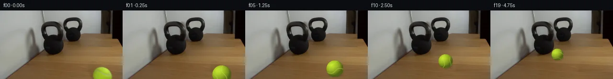

![首帧]()

Round 00
2026-11-05T08:03:38.687319+00:00像素候选变化代码 +199/−0inspection 更新
pixels d9d3bef27d05db10 · code f5db9ab4bfabbc75
查看本轮 generate.py 真实 diff
--- previous/generate.py
+++ current/generate.py
@@ -0,0 +1,199 @@
+from pathlib import Path
+import math
+
+import numpy as np
+from PIL import Image, ImageDraw, ImageFilter, ImageFont
+
+from artifact_io import save
+
+
+ROOT = Path(__file__).resolve().parent
+W, H = 256, 144
+N = 20
+SS = 4
+
+
+def smoothstep(x):
+ x = max(0.0, min(1.0, x))
+ return x * x * (3.0 - 2.0 * x)
+
+
+def build_clean_table(source):
+ """Make a local clean plate only where the starting ball/shadow is located."""
+ clean = source.copy().astype(np.float32)
+ # The disk covers x~192:234, y~117:143. Interpolate the wood along each
+ # scanline using untouched samples at both sides, then carry in a restrained
+ # amount of real nearby grain so the repair is not a flat color patch.
+ for y in range(109, H):
+ xl, xr = 184, 246
+ left = source[y, xl].astype(np.float32)
+ right = source[y, xr].astype(np.float32)
+ for x in range(184, 247):
+ # Only replace an expanded ellipse containing ball plus contact shadow.
+ ex = (x - 213.0) / 30.0
+ ey = (y - 137.5) / 23.5
+ if ex * ex + ey * ey > 1.15:
+ continue
+ a = (x - xl) / (xr - xl)
+ ramp = left * (1.0 - a) + right * a
+ # Grain residual from an unaffected strip 64 pixels to the left.
+ sx = max(3, x - 64)
+ lo = source[y, max(0, sx - 5):min(W, sx + 6)].astype(np.float32).mean(axis=0)
+ residual = source[y, sx].astype(np.float32) - lo
+ repaired = ramp + residual * 0.38
+ # Feather the replacement at the expanded ellipse boundary.
+ edge = ex * ex + ey * ey
+ mix = min(1.0, max(0.0, (1.15 - edge) / 0.20))
+ clean[y, x] = source[y, x] * (1.0 - mix) + repaired * mix
+ return np.clip(clean, 0, 255).astype(np.uint8)
+
+
+def ball_state(frame):
+ # Slow near-linear roll, followed by a gentle deceleration over the last 20%.
+ u = frame / 16.0
+ if u <= 0.78:
+ p = 0.86 * (u / 0.78)
+ else:
+ p = 0.86 + 0.14 * smoothstep((u - 0.78) / 0.22)
+ p = min(1.0, p)
+ x = 212.0 + (140.0 - 212.0) * p
+ y = 138.3 + (92.5 - 138.3) * p
+ radius = 20.4 + (12.4 - 20.4) * p
+ # After contact the ball is motionless, with a tiny physically plausible squash.
+ squash = 0.0
+ if frame == 17:
+ squash = 0.040
+ elif frame == 18:
+ squash = 0.018
+ return x, y, radius, p, squash
+
+
+def add_shadow(frame, cx, cy, radius, p, squash):
+ layer = Image.new("RGBA", (W * SS, H * SS), (0, 0, 0, 0))
+ draw = ImageDraw.Draw(layer)
+ # Tight contact core and broad soft penumbra. Direction follows the source light.
+ sx = (cx + radius * 0.20) * SS
+ sy = (cy + radius * 0.67) * SS
+ rx = radius * (0.78 + squash) * SS
+ ry = radius * 0.22 * SS
+ draw.ellipse((sx - rx, sy - ry, sx + rx, sy + ry), fill=(31, 25, 16, 72))
+ layer = layer.filter(ImageFilter.GaussianBlur(radius=max(1.2, radius * 0.14) * SS))
+ layer = layer.resize((W, H), Image.Resampling.LANCZOS)
+ return Image.alpha_composite(frame.convert("RGBA"), layer)
+
+
+def make_ball(cx, cy, radius, travel, squash):
+ # Render a shaded fuzzy sphere at 4x resolution, then downsample for antialiasing.
+ pad = 4
… diff truncated; 112 more lines …